السلسلة 46
السيارة (صنف B) · 40 سؤال بالصوت. حاول تجاوب بوحدك، من بعد شوف الجواب.
السؤال 1
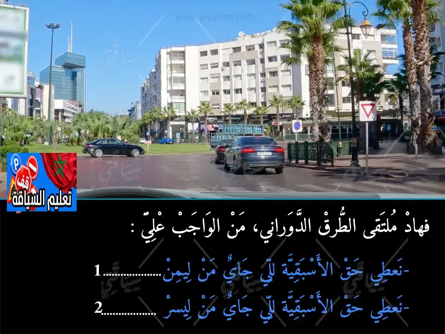
بيّن الجواب
الجواب الصحيح: 2
في الصورة نلاحظ أننا داخل ملتقى طرق دائري (مدار أو رومبوان)، ويوجد أمامنا علامة -ليس لك حق الأسبقية-، وهي على شكل مثلث مقلوب. 🔴 هذه العلامة تُشير إلى أن السائق يجب عليه أن يترك حق الأسبقية للمركبات التي تسير داخل المدار. وحسب قاعدة السير في المدارات: داخل المدار، تكون الأسبقية دائماً للمركبات القادمة من اليسار، لأن حركة السير في المدارات تكون في اتجاه معاكس لعقارب الساعة. 📌 إذاً، الجواب الصحيح هو: نعطي حق الأسبقية للي جاي من اليسار. إذن الجواب الصحيح هو رقم 2.
السؤال 2
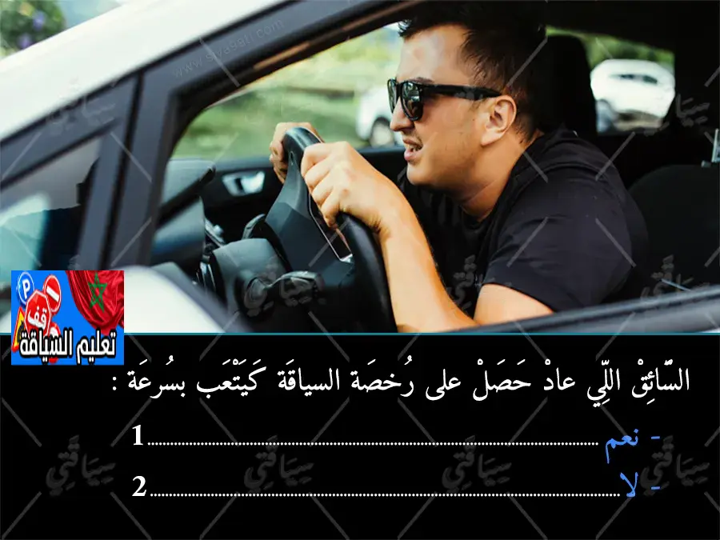
بيّن الجواب
الجواب الصحيح: 1
السائق المبتدئ، أي الذي حصل حديثًا على رخصة السياقة، غالبًا ما يتعب بسرعة لأنه يكون في حالة تركيز دائم وتوتر نتيجة قلة الخبرة. كل حركة أو قرار يحتاج منه إلى جهد ذهني كبير، عكس السائقين ذوي الخبرة الذين يقودون بثقة أكبر وبتلقائية. لهذا، يُنصح السائقون الجدد بالراحة بانتظام أثناء القيادة الطويلة وعدم المجازفة عند الإحساس بالإرهاق. إذن الجواب الصحيح هو رقم 1.
السؤال 3
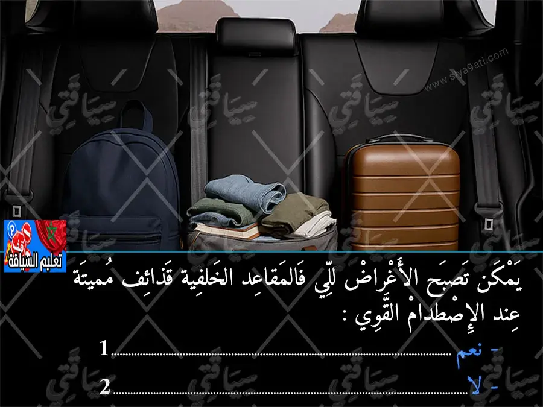
بيّن الجواب
الجواب الصحيح: 1
عند وقوع حادث سير، خاصة إذا كان الاصطدام عنيفًا، فإن الأغراض أو الحقائب الموجودة في المقاعد الخلفية والتي لم يتم تثبيتها بشكل آمن، يمكن أن تنطلق بقوة كبيرة نحو الأمام، وتصيب الركاب أو السائق، مما يُسبب إصابات خطيرة أو حتى الوفاة. لذلك، من المهم دائمًا تأمين الأمتعة داخل السيارة وربطها جيدًا، خصوصًا في المقاعد الخلفية أو صندوق السيارة. إذن الجواب الصحيح هو رقم 1.
السؤال 4
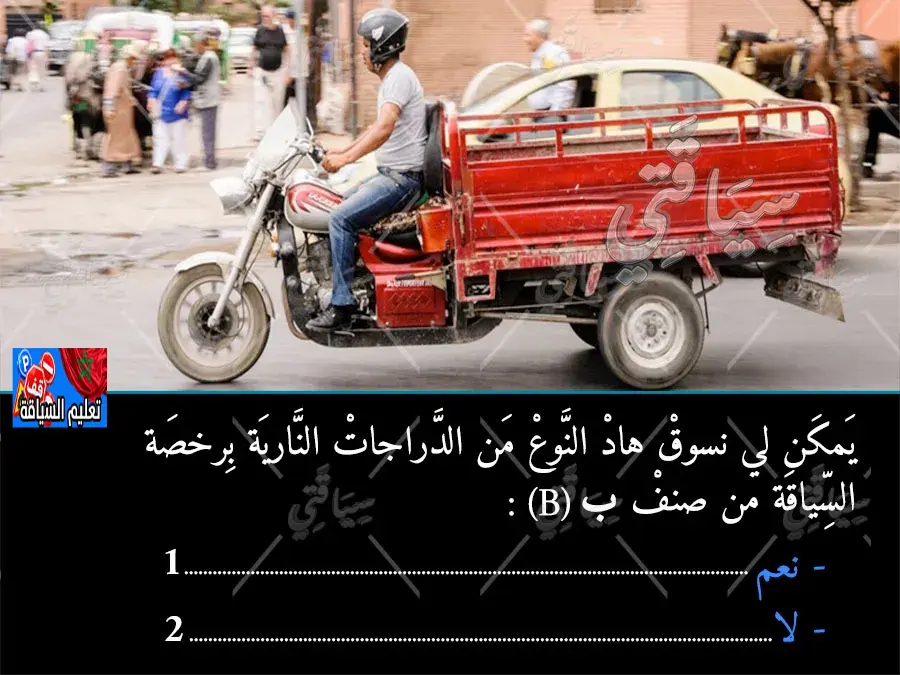
بيّن الجواب
الجواب الصحيح: 1
بالنسبة لسياقة هذا النوع من الدراجات النارية ذات الثلاث عجلات (تريبورتور)، فمن الضروري التوفر على رخصة السياقة من صنف -ب- (B). بمعنى آخر، لا يمكن سياقة هذا النوع من المركبات إلا إذا كنت حاصلًا على رخصة من هذا الصنف. إذن، الجواب الصحيح هو رقم 1.
السؤال 5
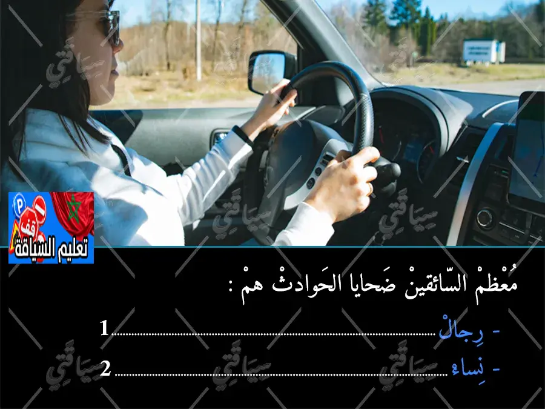
بيّن الجواب
الجواب الصحيح: 1
حسب الإحصائيات الوطنية في المغرب، فإن معظم ضحايا حوادث السير من السائقين هم رجال. وذلك راجع إلى أن نسبة الرجال الحاملين لرخصة السياقة وعدد ساعات قيادتهم وعدد التنقلات التي يقومون بها أكبر من النساء، مما يجعلهم أكثر عرضة للحوادث. رغم أن النساء يتعرضن أيضاً للحوادث، إلا أن النسبة الكبرى تبقى في صفوف الرجال. إذن الجواب الصحيح هو رقم 1.
السؤال 6
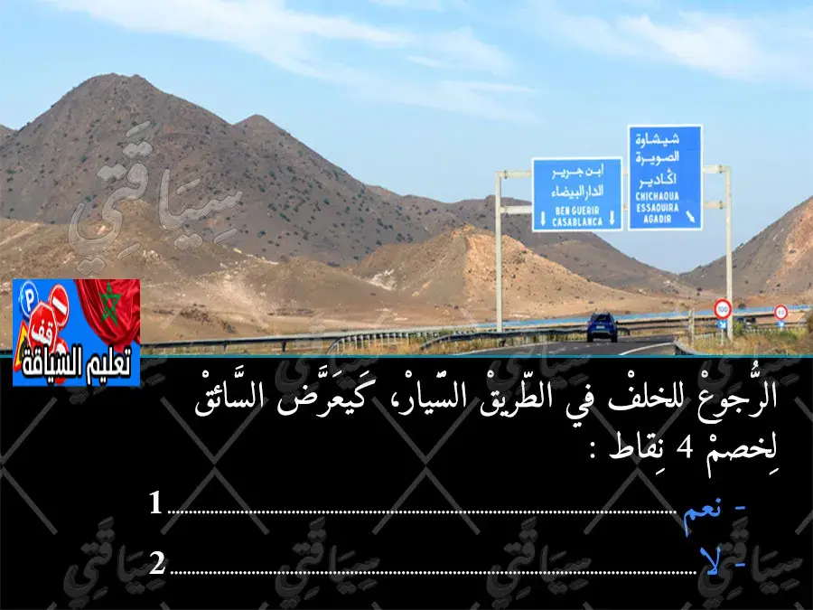
بيّن الجواب
الجواب الصحيح: 2
❌ لا، ماشي 4 نقاط، بل 3 نقاط فقط. 📌 الشرح: الرجوع إلى الخلف في الطريق السيار ممنوع تمامًا، لأنه كيشكل خطر كبير على السائقين الآخرين. حسب مدونة السير المغربية، هاد التصرف يُعتبر جنحة تُؤدي إلى: خصم 3 نقاط من رصيد رخصة السياقة. غرامة مالية تتراوح بين 4000 و8000 درهم. توقيف رخصة السياقة لمدة من شهر إلى ثلاثة أشهر. إذن الرجوع إلى الخلف في الطريق السيار يُعتبر جنحة تُؤدي إلى خصم 3 نقاط وليس 4 وغرامة مالية وتوقيف رخصة السياقة. إذن الجواب الصحيح هو رقم 2.
السؤال 7
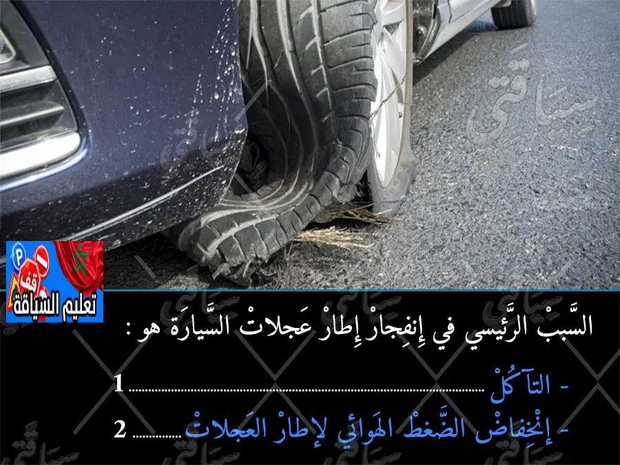
بيّن الجواب
الجواب الصحيح: 2
السبب الرئيسي في انفجار الإطار غالباً ما يكون هو: انخفاض الضغط الهوائي داخل العجلة لأن: الإطار المنخفض الضغط كيتعرض لاحتكاك كبير مع الطريق كيسخن بزاف أثناء السير، خصوصاً في السرعة العالية هاد الشي كيأدي إلى تمزق أو انفجار الإطار فجأة أما تآكل الإطار (النقشة ديال العجلة)، فرغم أنه خطر، إلا أنه غالباً يؤدي إلى ضعف التماسك أو انزلاق السيارة، وليس مباشرة إلى انفجار. إذن الجواب الصحيح هو رقم 2.
السؤال 8
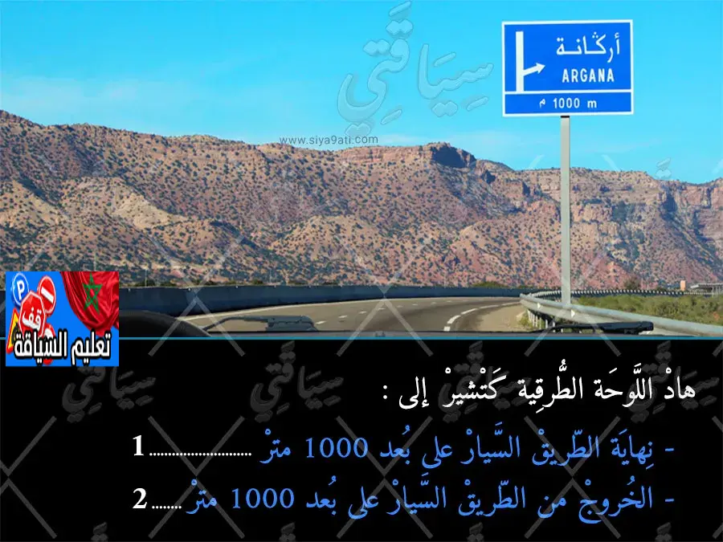
بيّن الجواب
الجواب الصحيح: 2
اللوحة الطّرقية لا تشير على أن الطّريق السّيار سوف ينتهي، بل تشير إلى الخروج من الطّريق الّسيار، يعني على انها تشير إلى وجود مخرج من الطّريق السّيار على بعد 1000 متر. إذن الجواب الصحيح هو رقم 2.
السؤال 9
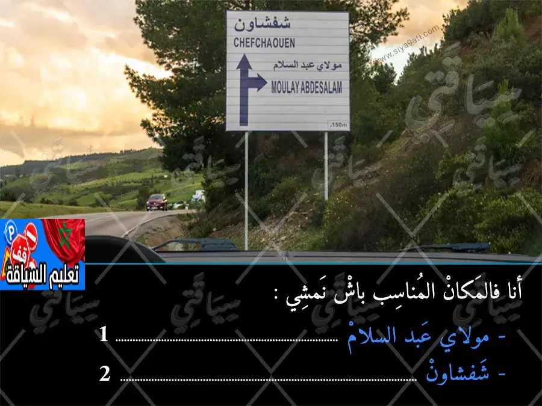
بيّن الجواب
الجواب الصحيح: 1 و 3
في هذه الحالة فنحن نتواجد في طريق وطنية كما تشير إليه اللوجة الطّرقية، في هذه الحالة بما انه لدينا مسلك واحد للسير إذن فنحن نتواجد في المسلك المناسب، يا إما للذهاب مباشرة إلى شفشاون، او الإنعطاف على اليمين للذهاب إلى مولا عبد السلام. إذن الجواب الصحيح هو رقم 1 و 2.
السؤال 10
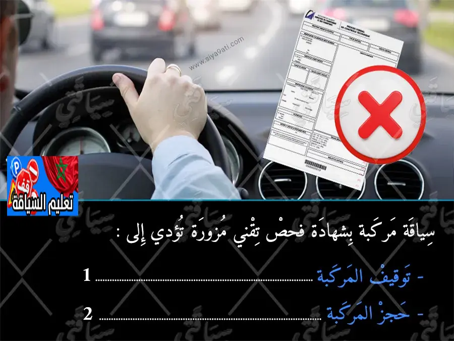
بيّن الجواب
الجواب الصحيح: 2
سياقة مركبة بشهادة فحص تقني مزورة تُعتبر جنحة خطيرة حسب مدونة السير المغربية، وتُعرّض السائق لعقوبات صارمة. وفقًا للمادة 263 من مدونة السير المغربية، يُعاقب كل من استعمل شهادة فحص تقني مزورة أو استعملها بطريقة تدليسية بالعقوبات التالية: الحبس من 6 أشهر إلى 3 سنوات. غرامة مالية تتراوح بين 2.000 و5.000 درهم. حجز المركبة في المحجز لمدة تتراوح بين 7 و15 يومًا. يتم توقيف العربة فقط عندما لا نمتلك شهادة الفحص التقني وليس تزويرها. تزوير شهادة الفحص التقني يتبعها حجز المركبة، عدم التّوفر على شهادة الفحص التقني يتبعها فقط توقيف المركبة. إذن الجواب الصحيح هو رقم 2.
السؤال 11
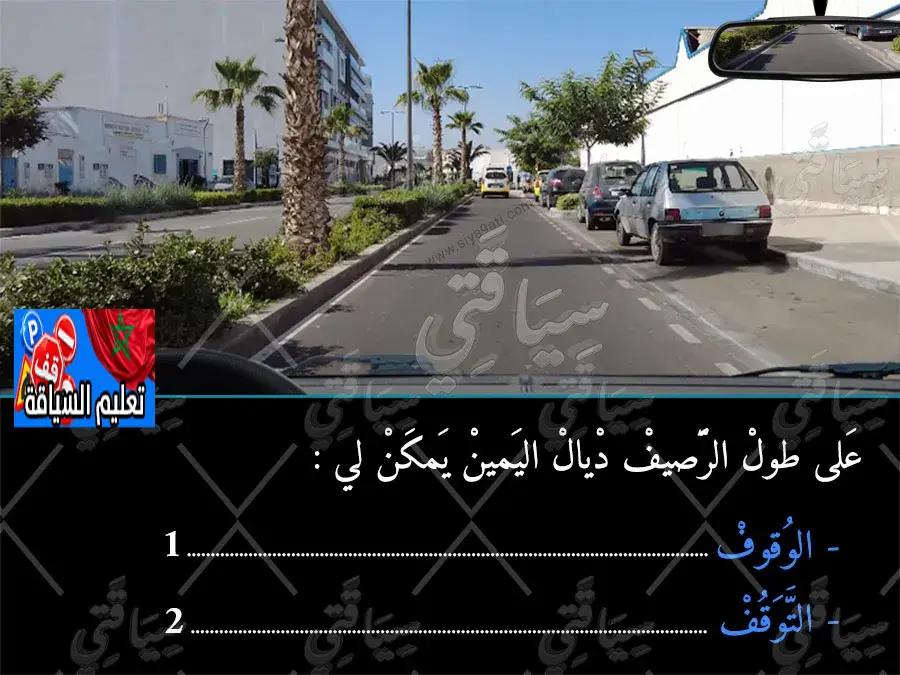
بيّن الجواب
الجواب الصحيح: 1 و 2
على طول الرصيف الأيمن، ما كايناش حتى شي علامة طرقية كمنعني من الوقوف أو التوقف، لذلك يمكن لي نوقف، ويمكن لي نتوقف كذلك.
السؤال 12
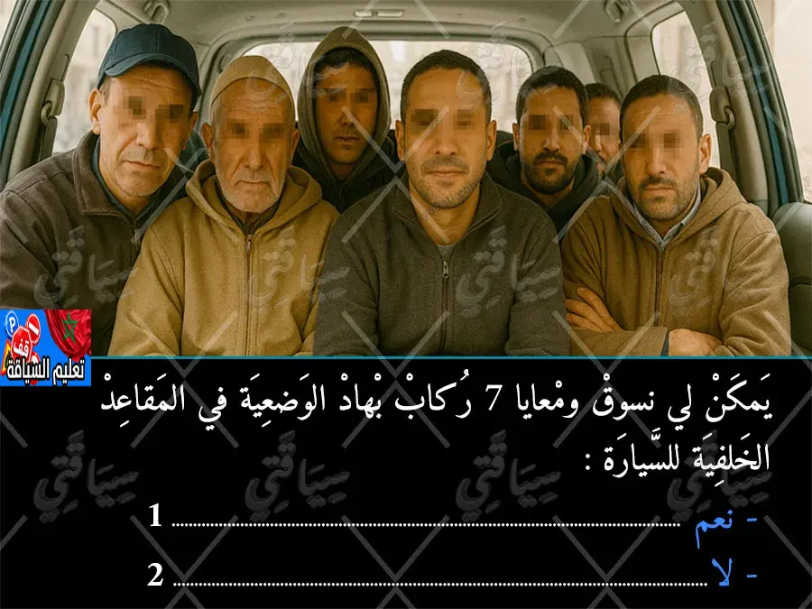
بيّن الجواب
الجواب الصحيح: 2
🚫 لا يمكن ليك تسوق ومعاك 7 ركاب فالمقاعد الخلفية ديال سيارة صغيرة، لأن هاد الوضعية غير قانونية وخطيرة. 🔹 رخصة السياقة من صنف -ب- (B) كتسمح ليك تسوق سيارة فيها 8 ركاب كحد أقصى + السائق، ولكن بشرط يكونو الركاب جالسين في مقاعد مجهزة، ومثبتين بأحزمة السلامة. ❌ أما فحالة الصورة، اللي فيها 7 ركاب راكبين فالمقاعد الخلفية فقط، وبشكل غير مريح، فهادشي كيعني: تجاوز عدد المقاعد المخصصة فديك الجهة وجود خطر كبير عند الفرملة أو فـ حالة حادث مخالفة لقانون السير ويمكن تعرّض السائق لغرامة أو سحب النقاط 📌 الخلاصة للمترشحين: كل راكب خاصو مقعد وحزام ديالو، وأي تجاوز فالعدد أو فالوضعية كيشكل خطر على الجميع، وممنوع قانونيًا. إذن الجواب الصحيح هو رقم 2.
السؤال 13
بيّن الجواب
الجواب الصحيح: 2
تناول الأدوية ما كينقصش من مفعول الكحول، بل العكس، بعض الأدوية كيزيدو من تأثيرو وكيخليو السائق أكثر خطورة فالسياقة. الكحول كيبقى فالجسم حتى يخرج بوحدو مع الوقت، وما كاين لا دوا ولا حاجة كتنقص من مفعولو بسرعة. إذن الجواب الصحيح هو رقم 2.
السؤال 14
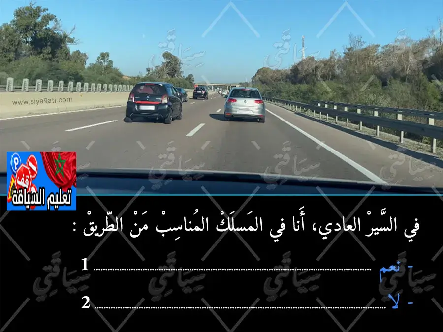
بيّن الجواب
الجواب الصحيح: 1
في السير العادي نعم انا في المسلك المناسب، المسلكين الموجودون على اليسار فهم مسالك خاصين بعملية التجاوز، اما بالنسبة للسير العادي فيجب ان اكون في المسلك الذي يتواجد على اليمين والذي أتواجد فيه أنا حاليا. إذن الجواب الصحيح هو رقم 1.
السؤال 15
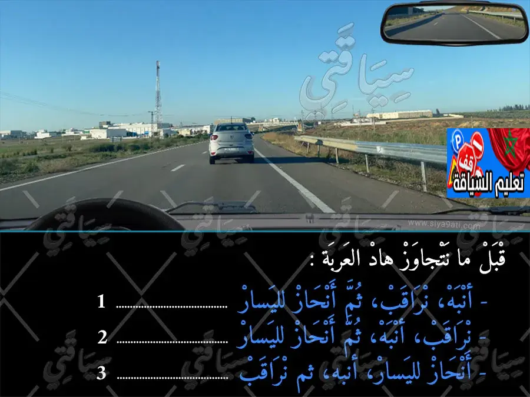
بيّن الجواب
الجواب الصحيح: 2
قبل ما تقوم بأي عملية تجاوز فالسياقة، خاصك تتبع ثلاث خطوات أساسية بالترتيب باش تكون العملية آمنة وما تسببش فحادث: ✅ نراقب: كنشوف فالمرايا وكنراقب المسار اللي بغيت ندوز منّو، ونتأكد واش الطريق فارغة من قدّامي ومن اللي جاي من اللور فليسار. ✅ نبه: كنستعمل السينيال (ضوء تغيير الاتجاه) باش نعلن على النية ديالي فالتجاوز، باش السائقين اللي معايا فالطريق يكونو عارفين، أيضا يمكن التّنبيه بإشارة ضوئية (ضوء الطريق بشكل سريع) ثم ✅ نحاز لليسار: من بعد التأكد والتنبيه، كنخرج للتجاوز بطريقة آمنة. 🚫 إذا بدينا التجاوز بلا مراقبة أو بلا تنبيه، نقدر ندخل فخطر كبير أو نسبب فحادثة. إذن الجواب الصحيح هو رقم 2.
السؤال 16
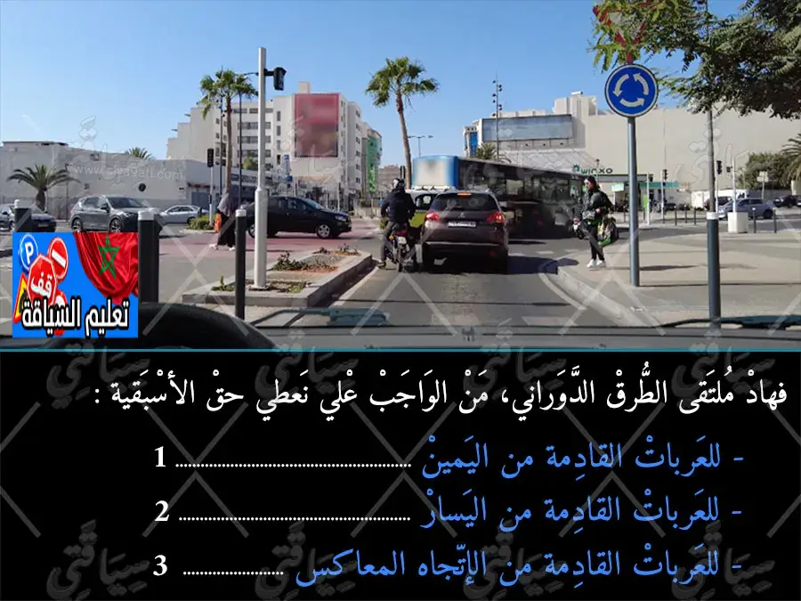
بيّن الجواب
الجواب الصحيح: 2
في هذه الحالة يرجى التركيز جيدا وليس التّسرع في الإجابة، لديك الوقت الكافي للإجابة، في الصورة لدينا علامتين عموديتين، علامة المدار بالأزرق، وفوقها يوجد علامة ليس لكم حق الأسبقية (متلث مقلوب), عند وجود علامة ليس لكم حق الأسبقية في المدار فنعطي حق الأسبقية للعربات القادمة من اليسار فقط. إذن الجواب الصحيح هو رقم 2.
السؤال 17
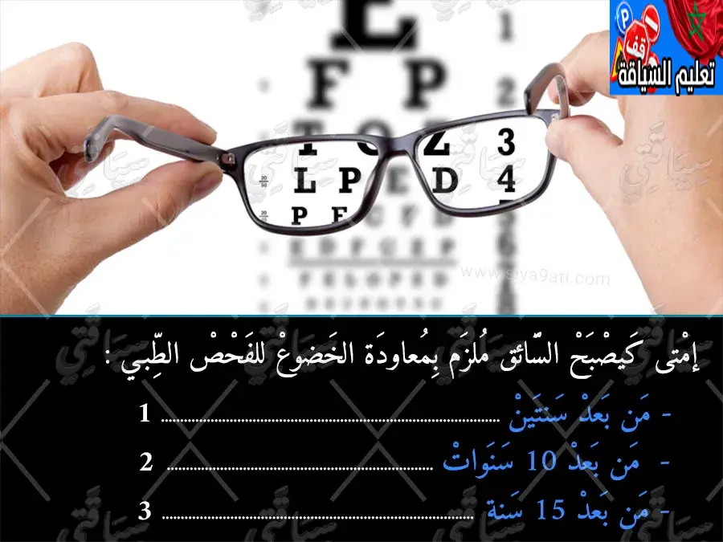
بيّن الجواب
الجواب الصحيح: 2
كل سائق حاصل على رخصة السياقة من نوع -ب- (B) أو غيرها، كَيكون ملزم بـ إعادة الفحص الطبي كل: 📌 10 سنوات إذا كان أقل من 65 سنة 📌 سنتين فقط إذا كان أكثر من 65 سنة هذا الفحص الطبي ضروري باش نتحققو أن السائق مازال كيتوفر على القدرات البدنية والعقلية اللازمة لقيادة السيارة (النظر، السمع، رد الفعل...). إذن الجواب الصحيح هو رقم 2.
السؤال 18
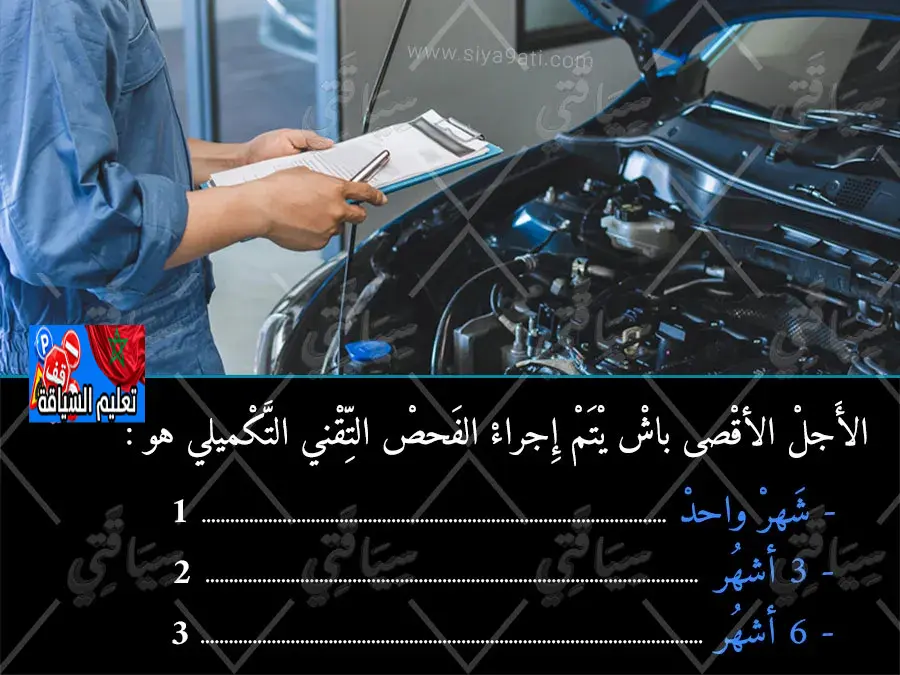
بيّن الجواب
الجواب الصحيح: 1
منين كتدوز السيارة الفحص التقني وما كتنجحش، كيعطيوك مهلة باش تصلّح الأعطاب وترجع تعاود الفحص، وهاد الفحص الثاني كيتسمى الفحص التقني التكميلي. ⏱️ المدّة القصوى اللي خاصك ترجع فيها للفحص هي: شهر واحد. 📌 إلى فات هاد الشهر وما درتيش الفحص التكميلي، كتصبح السيارة غير قانونية، وما خاصهاش تسير في الطريق. إذن الجواب الصحيح هو رقم 1.
السؤال 19
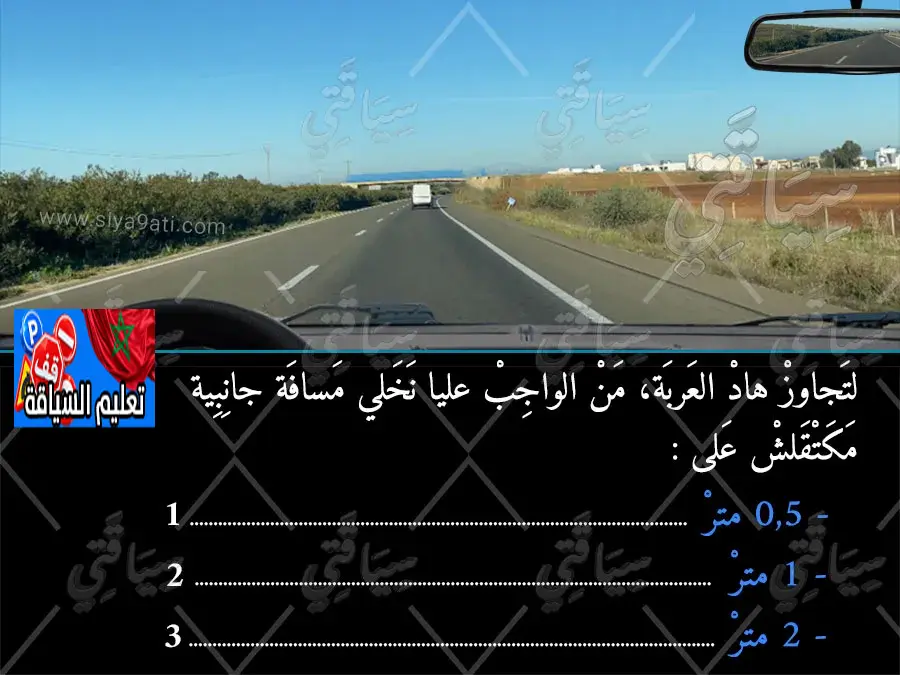
بيّن الجواب
الجواب الصحيح: 2
منين بغيت نتجاوز شي عربة (يعني نسير قدّامها ونتعداها)، خاصني نخلي مسافة جانبية كافية بيني وبينها، باش ما نعرض لا راسي ولا السائق الآخر للخطر. 🚗💨 هاد المسافة الجانبية كتضمن الأمان أثناء عملية التجاوز، خصوصًا فالحالات اللي كتكون فيها الطريق ديقة، أو السائق الآخر ما كيبانش واش غادي يبدل الاتجاه. 🔴 مدونة السير المغربية كتحدد أن المسافة الجانبية اللي خاص نخليها ما خصهاش تقل على 1 متر، وهادشي باش نتجنب الاصطدام، أو نضرب المرايا الجانبية ديال السيارة اللي كنجاوز. إذن الجواب الصحيح هو رقم 2.
السؤال 20
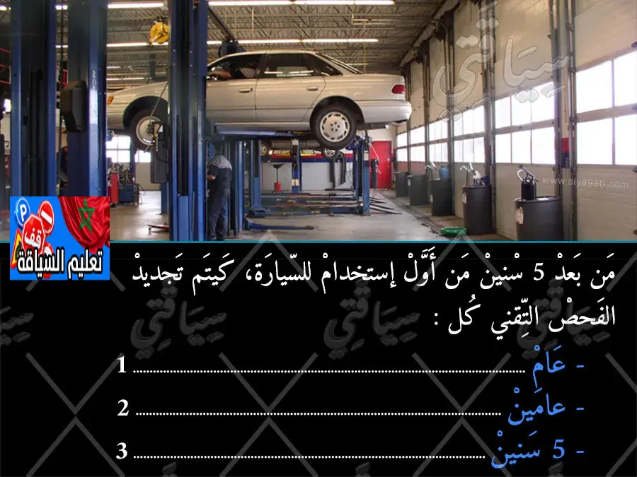
بيّن الجواب
الجواب الصحيح: 1
في المغرب، السيارة الجديدة كَتدوز أول فحص تقني بعد 5 سنين من أول استعمالها أو تسجيلها. من بعد هاد 5 سنين، كَيولي الفحص التقني إجباري كل عام. يعني خاصك تمشي تدير -الكونطرول تيكنيك- مرة وحدة كل عام باش تتأكد أن السيارة ما فيهاش مشاكل تقنية تهدد السلامة. إذن الجواب الصحيح هو رقم 1.
السؤال 21
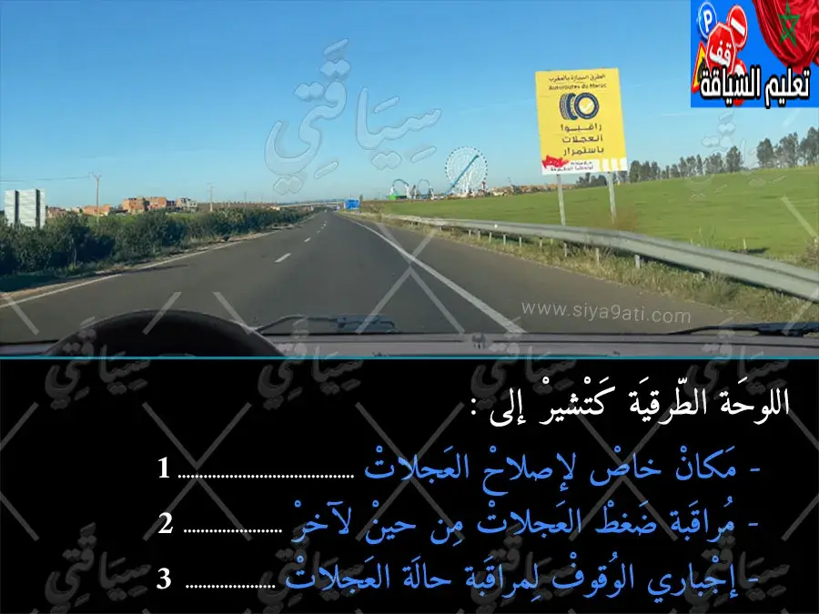
بيّن الجواب
الجواب الصحيح: 2
اللوحة الطرقية اللي فيها عبارة بحال -راقبوا العجلات باستمرار- فهي كاتكون العلامة كاتكون إرشادية، يعني كتنبه السائق بدون ما تفرض عليه الوقوف خصوصًا في الطرق السيارة أو فالمناطق اللي فيها منحدرات أو حرارة عالية كتعني أن السائق خاصو يراقب من حين لآخر حالة العجلات. لا تعني مكان مخصص للإصلاح (الاختيار 1)، لأنها ما كتشيرش لوجود ورشة أو ميكانيكي، فقط تنبيه وقائي. 📌 الفائدة من هاد اللوحات هي التذكير بخطورة انفجار العجلات بسبب الضغط الزائد أو الناقص، وخاصة فالسياقة لمسافات طويلة. إذن الجواب الصحيح هو رقم 2.
السؤال 22
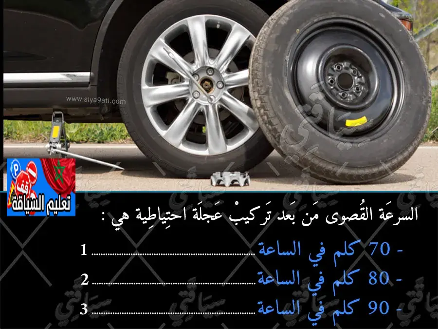
بيّن الجواب
الجواب الصحيح: 2
من بعد ما تركّب عجلة احتياطية، السرعة اللي خاصك تسوق بها كتكون محدودة. العجلات الاحتياطية غالبًا كتكون أصغر من العجلات العادية (كتسمى -galette-)، ومصنوعة فقط للاستعمال المؤقت باش توصّل لمكان الإصلاح أو أقرب ميكانيكي. 🚫 ما خاصكش تفوق 80 كلم/ساعة، لأن هاد النوع من العجلات ما كيتحملش السرعة الكبيرة وقد يسبب خطر فقدان السيطرة على السيارة. 📌 خلاصة: من بعد تركيب عجلة احتياطية، السرعة القصوى هي 80 كلم/ساعة، ولازم تبدّلها في أقرب فرصة. إذن الجواب الصحيح هو رقم 2.
السؤال 23
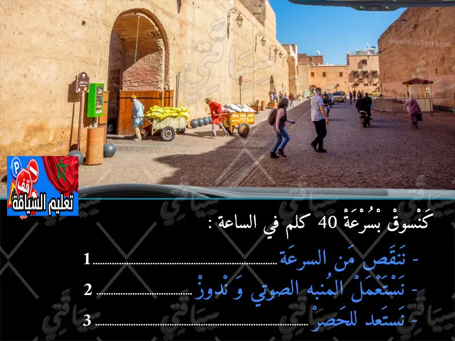
بيّن الجواب
الجواب الصحيح: 1 و 3
في هاد الحالة، كنشوف طريق ضيّقة، كاين فيها راجلين، عربات يدوية، وحتى دراجات نارية. وكنسوق بسرعة 40 كلم/ساعة، اللي كتعتبر سرعة مفرطة فهاذ النوع من الأماكن. ⚠️ في هاد الحالة، خاصنا نكونو واعيين بالخطر، لأن أي شخص يمكن يخرج قدامنا فجأة. 📌 شنو ندير؟ ✅ نقصّ من السرعة: باش نكون قادر نحبس فالحين إذا وقع شي طارئ ✅ نستعد للحصر: نخلي رجلي قريبة من الفرامل ❌ ما نستعملوش المنبه الصوتي وندوز، لأن هاد التصرف غير قانوني داخل التجمعات السكنية وكيشكل خطر على الناس فالطريق إذن الجواب الصحيح هو رقم 1 و 3.
السؤال 24
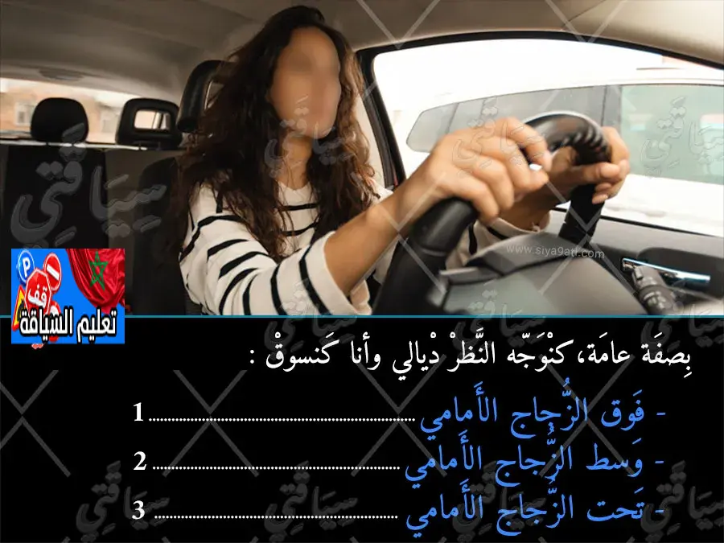
بيّن الجواب
الجواب الصحيح: 2
باش نسوق بطريقة مزيانة ونتفادى الحوادث، خاصني نوَجّه نَظري تقريبا لوسط الزجاج الأمامي، وبالضبط لبعيد قدّامي فالطريق. إلا شديت النظر لفوق بزاف، ما غاديش نشوف الطريق. وإلا شديتو لتحت بزاف، غادي نشوف غير قدّام الكابو، وهادشي قريب بزاف وما كيعطيكش الوقت باش تردّ الفعل. 📌 منين كنشوف بعيد، كنكون كنشوف حتى القريب. لكن منين كنشوف غير القريب، ما كنشوفش البعيد. وهادشي علاش خاصنا نوجّهو النظر للبعيد، باش نشوف مزيان، ونعرف شنو جاي قبل ما نوصل ليه، ونكون مستعدّ. إذن الجواب الصحيح هو رقم 2.
السؤال 25
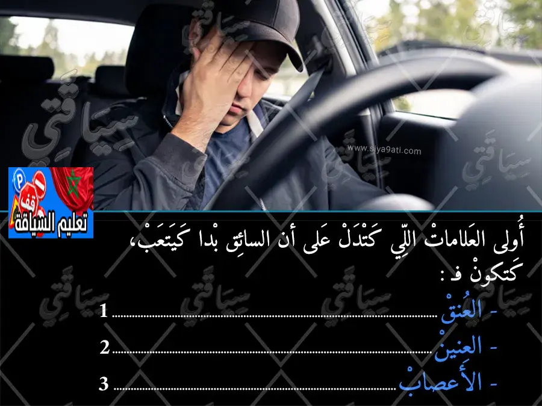
بيّن الجواب
الجواب الصحيح: 2
التعب كيبان فـ الأول من خلال: الرمش بزاف صعوبة فـ فتح العينين الضبابية فـ الرؤية فقدان التركيز أما العنق والأعصاب، فهي علامات ممكنة ولكن كاتجي في مراحل متقدمة من التعب، ماشي مباشرة من الأول. إذن الجواب الصحيح هو رقم 2.
السؤال 26
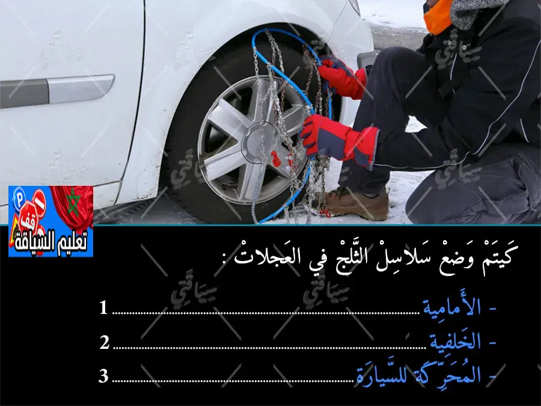
بيّن الجواب
الجواب الصحيح: 3
عند السياقة في الطرق المغطاة بالثلوج، يتم وضع سلاسل الثلج على العجلات التي تُحرّك السيارة، وهي ما يُعرف بـ العجلات المحركة. إذا كانت السيارة بدفع أمامي ← توضع السلاسل في العجلات الأمامية إذا كانت بدفع خلفي ← توضع في العجلات الخلفية وإذا كانت بدفع رباعي ← حسب توصية الصانع 📌 لذلك، لا يمكن اختيار -الأمامية- أو -الخلفية- بشكل عام، بل الأفضل هو الجواب الشامل: العجلات المحركة. إذن الجواب الصحيح هو رقم 3.
السؤال 27
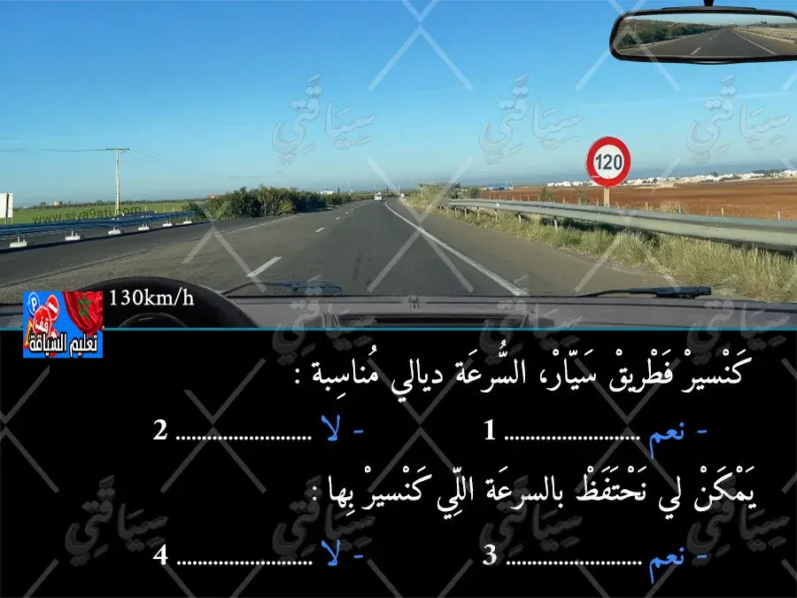
بيّن الجواب
الجواب الصحيح: 2 و 4
في الطريق السيار، السرعة القصوى المحددة قانونيًا تكون عادةً 120 كلم/ساعة، كما هو مشار إليه في العلامة العمودية الموجودة في الصورة. إذا كنتَ تسير بسرعة 130 كلم/ساعة، فأنت تتجاوز الحد الأقصى المسموح به، وبالتالي تكون في حالة مخالفة لقانون السير. حتى لو كنتَ تحس أن السياقة مريحة والسيارة مستقرة، ممنوع تتجاوز السرعة القانونية المحددة في العلامات. أي تجاوز يُعتبر مخالفة ويُعرضك لغرامة مالية، وخصم نقاط من رخصتك، وقد يؤدي أحيانًا إلى سحبها. إذن الجواب الصحيح هو رقم 2 و 4.
السؤال 28
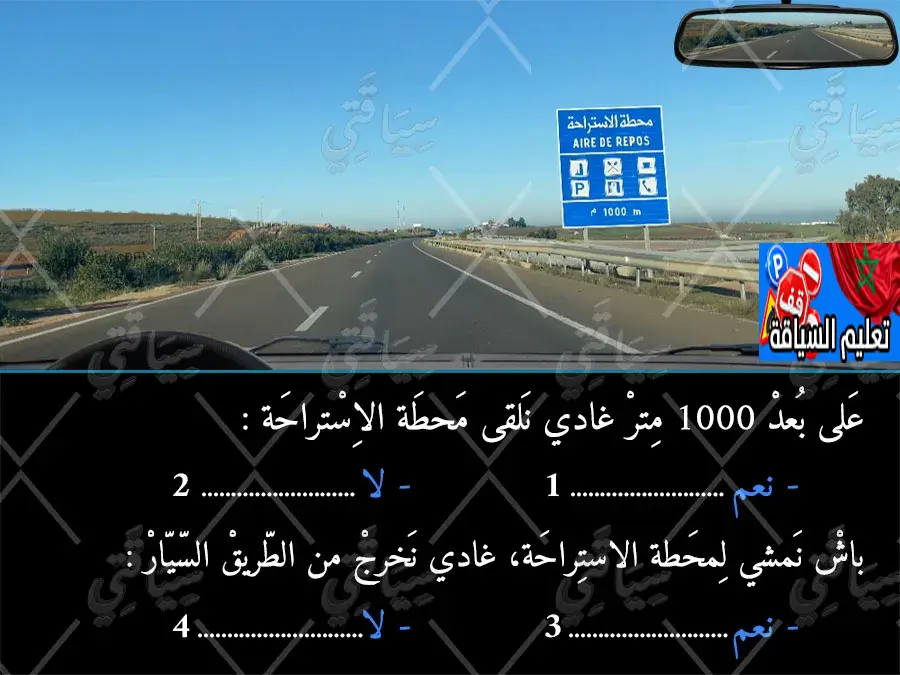
بيّن الجواب
الجواب الصحيح: 1 و 4
منين كنشوف لوحة فيها مكتوب -محطة استراحة على بعد 1000 متر-، فهاد الشي كيعني أنني بالفعل غادي نلقى محطة استراحة بعد كيلومتر واحد، وهاد المحطات كاتكون داخل الطريق السيار، ماشي خارجو. 🚫 ماشي ضروري نخرج من الطريق السيار، لأن هاد النوع من المحطات كايتوجد فممر خاص بيه على جانب الطريق، مخصص للوقوف المؤقت، للراحة أو استعمال المرافق، بدون مغادرة الطريق السيار نهائيًا. إذن الجواب الصحيح هو رقم 1 و 4.
السؤال 29
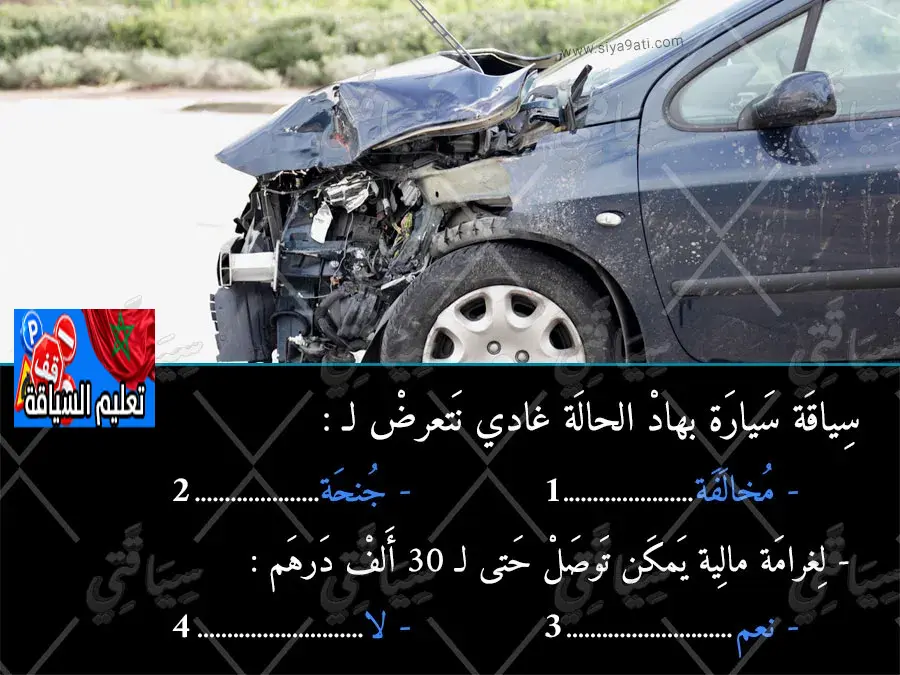
بيّن الجواب
الجواب الصحيح: 2 و 3
بناءً على مدونة السير المغربية، تُعتبر سياقة مركبة في حالة ميكانيكية خطيرة جنحة، ويُعاقب عليها القانون بغرامة مالية. المادة 157 من مدونة السير تنص على أنه: -يعاقب بغرامة من خمسة آلاف (5.000) إلى ثلاثين ألف (30.000) درهم، كل صانع مركبات أو كل وكيل أو مستورد أو مالك لها رفض إخضاع مركبته، التي أدخل تغييرا على خصائصها التقنية، للمصادقة من جديد أو أهمل ذلك.- وفي حالة العود، يعاقب المخالف بالحبس من ثلاثة (3) أشهر إلى سنة واحدة وبضعف الغرامة المذكورة أعلاه أو بإحدى هاتين العقوبتين فقط. إذن الجواب الصحيح هو رقم 2 و 3.
السؤال 30
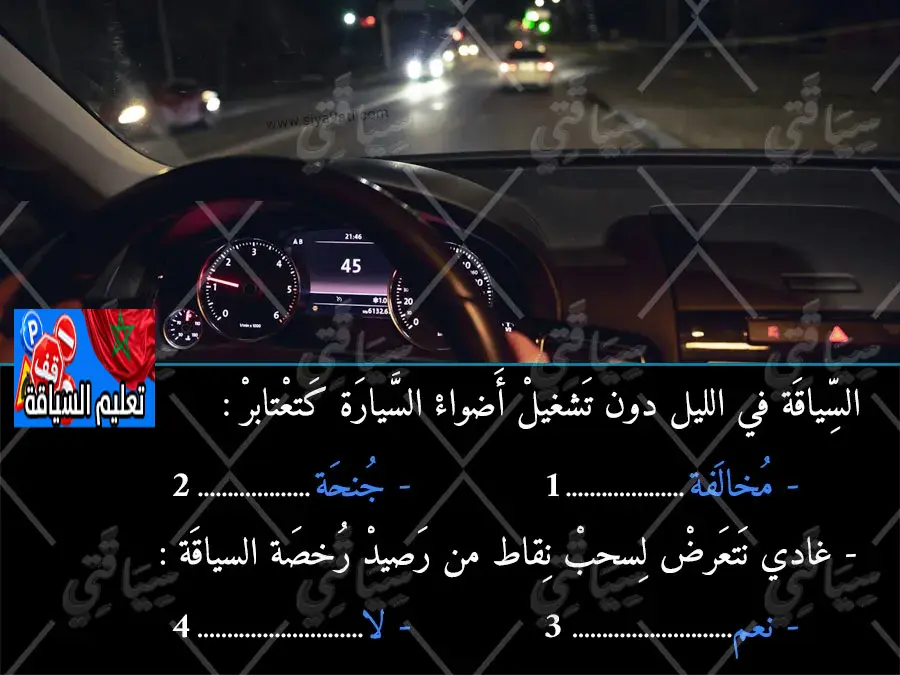
بيّن الجواب
الجواب الصحيح: 1 و 3
السياقة في الليل بدون تشغيل أضواء السيارة تُعتبر مخالفة من الدرجة الأولى حسب مدونة السير المغربية، وبغرامة مالية تتراوح بين 700 و1400 درهم، مع خصم 3 نقاط من رصيد رخصة السياقة. القيادة في الظلام دون أضواء تشكل خطرًا كبيرًا على السائق وباقي مستعملي الطريق لأنها تقلل من الرؤية وتجعل السيارة غير مرئية للآخرين، لذلك يُفرض قانونيًا تشغيل الأضواء ليلاً أو عند ضعف الرؤية. إذن الجواب الصحيح هو رقم 1 و 3.
السؤال 31
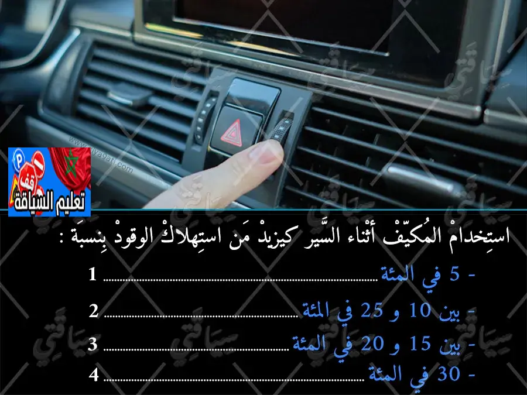
بيّن الجواب
الجواب الصحيح: 2
استعمال المكيف داخل السيارة (الكليماتيزور) كيأثر بشكل مباشر على استهلاك الوقود، خصوصًا فالمدينة أو فالزحام. لأن تشغيل المكيف كيزيد من الضغط على المحرك، وهادشي كيجعل السيارة تستهلك كمية أكبر من الوقود. 📊 حسب الدراسات، استهلاك الوقود كيقدر يزيد بـ: ما بين 10% و 25% عند تشغيل المكيف، حسب نوع السيارة، والسرعة، والحرارة الخارجية. إذن الجواب الصحيح هو رقم 2.
السؤال 32
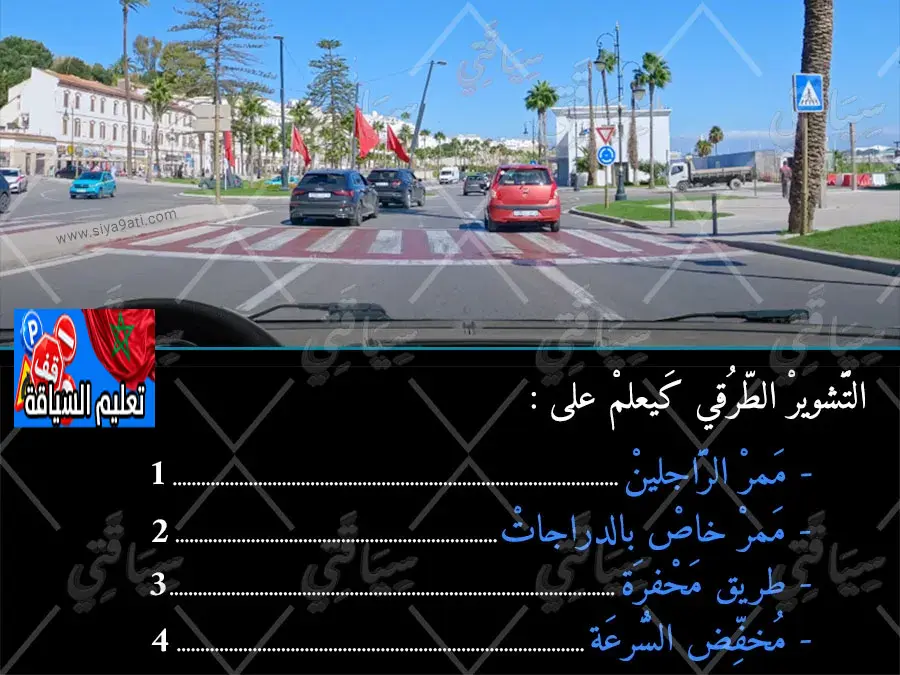
بيّن الجواب
الجواب الصحيح: 1 و 4
في هاد الصورة، التشوير الطرقي كيعلّـم على وجود ممر الراجلين، والدليل على ذلك هو: ✔️ الإشارة الزرقاء على اليمين وهاد العلامة معناها -ممر الراجلين-. ✔️ الخطوط البيضاء على الأرض (تشوير أفقي) كتدل بوضوح على مكان عبور الراجلين. بالنسبة للاختيارات الأخرى: ❌ ما كايناش لا علامة لا ممر خاص بالدراجات ❌ ما كايناش شي علامة ولا مظهر كيبيّن أن الطريق محفرة لكن كاين مُخفّض للسرعة (dos d’âne)، والدليل هو أن: ✔️ ممر الراجلين باين مرفوع شوية على سطح الطريق، وهاد النوع معروف فالمغرب، وكيتسمى -ممر راجلين مرفوع-، كايخدم في نفس الوقت كممر وكمُخفّض للسرعة. إذن الجواب الصحيح هو رقم 1 و 4.
السؤال 33
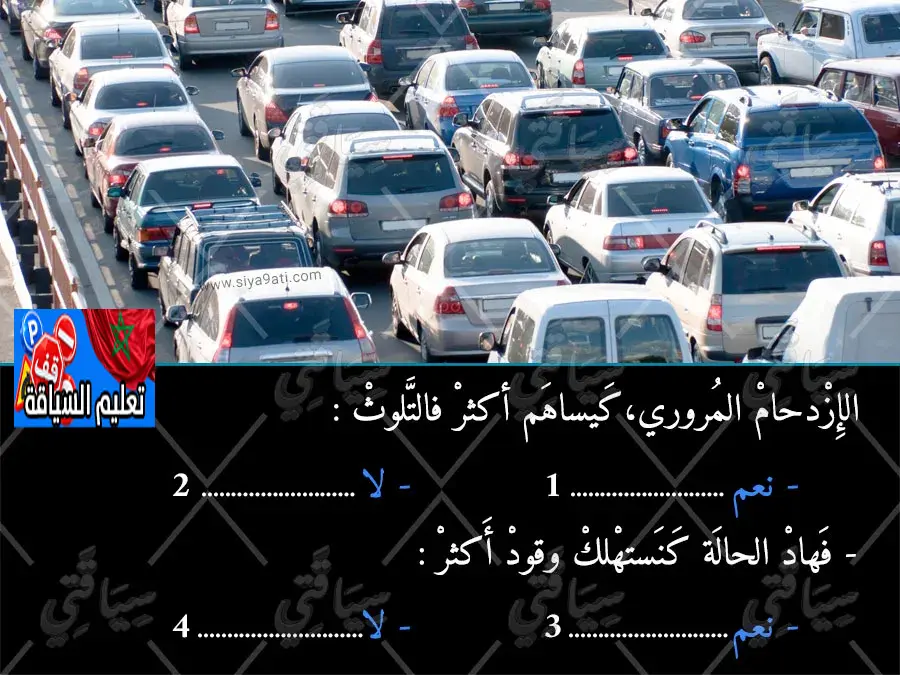
بيّن الجواب
الجواب الصحيح: 1 و 3
ملي كيكون الزحام المروري، كيتسبب فمشكلين رئيسيين: ✅ التلوث كيزيد: لأن السيارات كتكون شاعلة وواقفة أو كتمشي ببطء، وكتخرج الغازات طيلة الوقت بدون ما تتقدّم، وهادشي كيساهم بزاف فتلويث الهواء. ✅ استهلاك الوقود كيزيد: في الزحام، كنديرو بزاف ديال التوقف والانطلاق، وهاد الطريقة ديال السياقة كتصرف الوقود أكثر من السياقة العادية فطريق مفتوحة. إذن الجواب الصحيح هو رقم 1 و 3.
السؤال 34
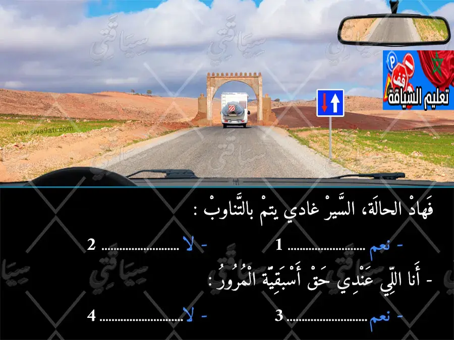
بيّن الجواب
الجواب الصحيح: 1 و 3
العلامة الطّرقية الخاصة بالإرشاد فهي تشير على أن السّير بالتّناوب، وهي تتواجد في الغالب في طريق تسمح بمرور عربة واحدة، مثلا في هذه الحالة يوجد قوس يسمح بمرور عربة واحدة لانه من الصعب مرور عربتين في نفس اللحظة. والتناوب يعني التناوب في المرور. بالنسبة هل أملك حق الأسبقية ام لا، فنشرح قليلا العلامة الطّرقية للفهم، كما نرى يوجد سهمين، سهم أبيض وسهم أحمر، السهم الأبيض هو الذي يشير للأسبقية في المرور، كما انه في إتجاه السير الخاص بي، وهو يعنيني على انني انا من أمتلك الأسبقية في المرور. السهم الأحمر بما انه في إتّجاه العربات القادمة من الّإتجاه المعاكس إذن ليس لها حق الأسبقية. في هذه الحالة السّير يتم بالتّناوب وأيضا لدي حق الأسبقية في المرور. إذن الجواب الصحيح هو رقم 1 و 3.
السؤال 35
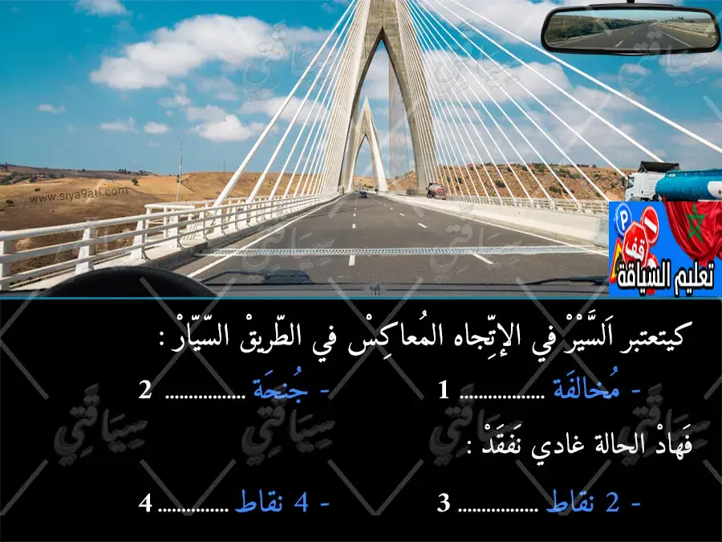
بيّن الجواب
الجواب الصحيح: 2 و 4
السير فالاتجاه المعاكس فـ الطريق السيار كيتعتبر جُنحة خطيرة حسب مدونة السير المغربية، لأنو كيشكل خطر كبير على حياة السائق وباقي مستعملي الطريق. القانون كيعاقب على هاد السلوك بـ سحب 4 نقاط من رخصة السياقة، مع إمكانية التوقيف والغرامة. إذن الجواب الصحيح هو رقم 2 و 4.
السؤال 36
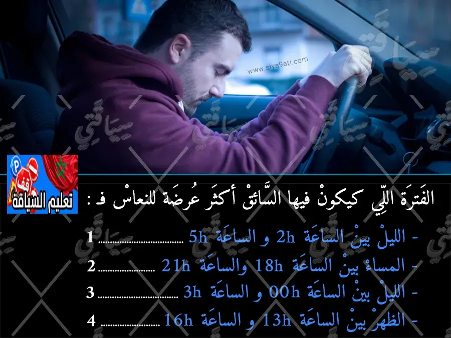
بيّن الجواب
الجواب الصحيح: 1 و 4
الفترة اللي كَيبدا فيها السائق يحس بالنعاس كترجع بالأساس لساعتين بيولوجيتين معروفتين عالميًا بأن الجسم كَيكون فيهم فحالة خمول طبيعي: 🔹 الليل بين 2 و5 صباحًا: هي أخطر فترة لأن الجسم كَيكون في أدنى درجات النشاط، والعقل مبرمج طبيعيًا على النوم فهاد الوقت، خصوصًا إذا كان السائق ما ناعسش مزيان. 🔹 الظهر بين 1 و4 الزوال: حتى هاد الوقت كَيعرف انخفاض فـ التركيز بسبب الهضم والتعب النهاري، وكيوقع فيه النعاس حتى لو السائق كان فايق من قبل. بالنسبة ل الاختيار 2: المساء بين 6 و9 هاد الفترة كَيبدا الجسم يستعد للراحة، لكن تركيز السائق كيكون مزال مقبول وما كَيبقاش فيها النعاس قوي بزاف. الاختيار 3: الليل بين 12 و3 هاد الوقت فيه بداية الشعور بالعياء، لكن ماشي بنفس حدة الساعة 2 إلى 5 اللي فيها الجسم كيطيح فـ مرحلة النوم العميق. لخلاصة: السياقة فالليل ما بين 2 و5، وفالزوال ما بين 1 و4، كتعتبر فترات خطيرة من حيث النعاس، وكتطلب من السائق يكون منتبه وياخد استراحة إذا حس بالتعب. إذن الجواب الصحيح هو رقم 1 و 4.
السؤال 37
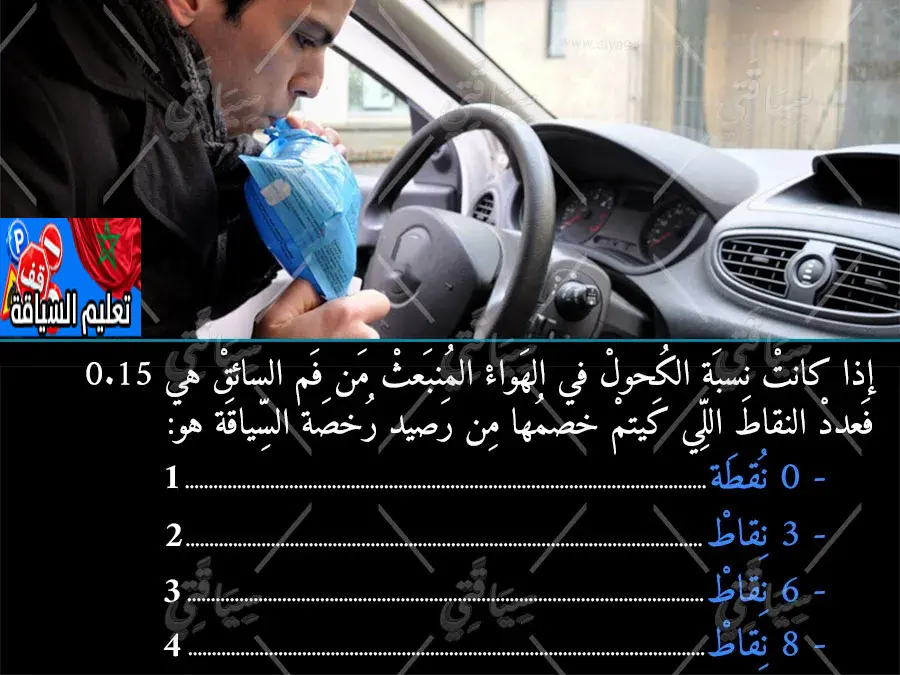
بيّن الجواب
الجواب الصحيح: 3
إذا تم قياس نسبة الكحول في الهواء المنبعث من فم السائق ووجدت أنها تساوي أو تفوق 0.10 ملغ/لتر، أو إذا كانت نسبة الكحول في الدم تساوي أو تفوق 0.20 غرام/لتر، فإن السائق يُعتبر في حالة سكر قانونية، وتُمنع عليه القيادة وفقًا لمدونة السير المغربية. ⚠️ في هذه الحالة، تُصنّف القيادة تحت تأثير الكحول أو مواد مخدرة كـ جنحة، ويُعاقب السائق بالعقوبات التالية: ✅ العقوبات المقررة: الغرامة المالية: من 5000 إلى 10,000 درهم مدة سحب رخصة السياقة: من 6 أشهر إلى سنة عدد النقاط المحذوفة من رخصة السياقة: 6 نقاط إجراءات إضافية: توقيف المركبة الحبس من 6 أشهر إلى سنة 📌 هذه العقوبات هدفها الحفاظ على سلامة السائقين وباقي مستعملي الطريق، لذلك يُمنع تمامًا السياقة تحت تأثير الكحول أو أي مواد مخدرة.
السؤال 38
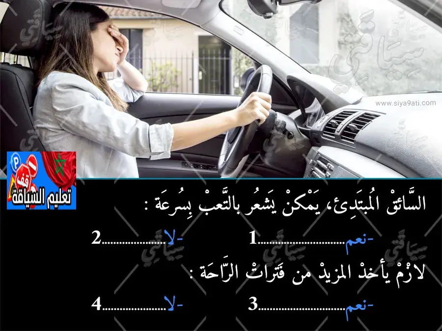
بيّن الجواب
الجواب الصحيح: 1 و 3
السائق اللي باقي جديد فالسياقة، يعني اللي خدا البيرمي ديالو غير مؤخراً، كيتعرض للتعب بسرعة كبيرة مقارنة مع السائق اللي عندو تجربة. علاش؟ لأن السائق المبتدئ كيبقى مركز بزاف، كيتوتر، وكيفكر فكل حركة كيديرها، وهاد التركيز الكبير كيرهق الدماغ وكيخليه يتعب بسرعة. ⏸️ لهذا خاصو يدير الوقفات (فترات الراحة) بانتظام، خصوصاً إلا كان غادي فمسافة طويلة. هاد الوقفات كتعاون السائق باش يرتاح، يرجع تركيزو، ويسوق بأمان. 📌 خلاصة: السائق الجديد = كيتعب بسرعة ← خاصو يرتاح مزيان باش ما يتعرض لا هو ولا الركاب للخطر. غذن الجواب الصحيح هو رقم 1 و 3.
السؤال 39
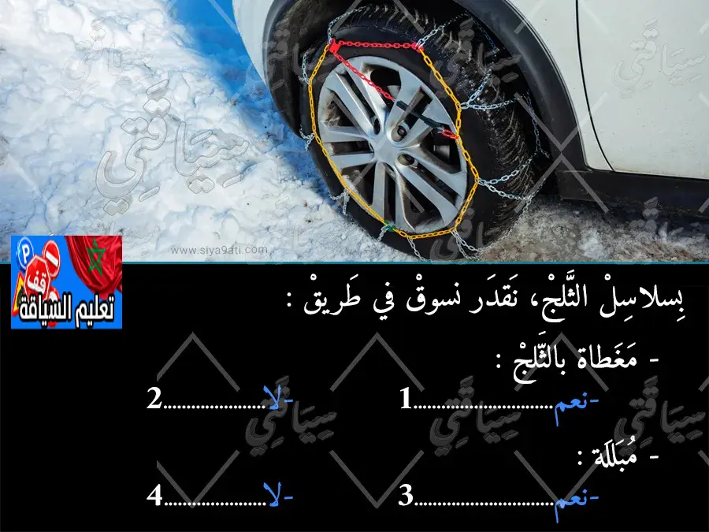
بيّن الجواب
الجواب الصحيح: 1 و 4
سلاسل الثلج مصممة خصيصًا للطرق اللي مغطاة بالثلج أو الجليد، باش تزيد التماسك وتمنع الانزلاق. 🔹 لكن فطريق مبللة فقط (يعني فيها غير الماء أو الرطوبة ومافيهاش ثلج)، استعمال سلاسل الثلج خطر، وها علاش: ❌ السلاسل كتضعف تماسك العجلات في طريق مبللة، وهاد الشي ممكن يسبب انزلاق مفاجئ، خصوصًا فالإنعطاف و الفرملة. ❌ كتخلي السيارة ترتج وتفقد التوازن، خصوصًا فالسرعة. ❌ كتآكل العجلات وتخرب سطح الطريق، وهاد الشي ممنوع قانونيًا. 📌 الخلاصة: سلاسل الثلج تستعمل غير فوق الثلج أو الجليد، أما فالطرق المبللة بالماء فقط، فكتولي خطر وقد تسبب انزلاق بدل الحماية. إذن الجواب الصحيح هو رقم 1 و 4.
السؤال 40
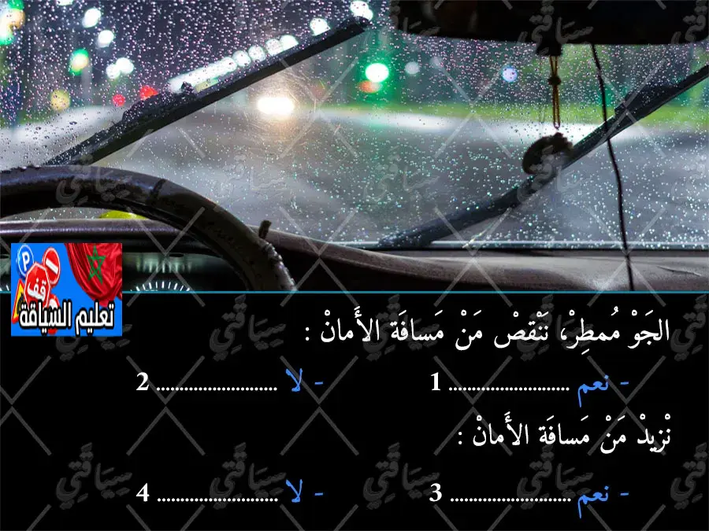
بيّن الجواب
الجواب الصحيح: 2 و 3
فحالة الجو الماطر، الطريق كاتكون مبلّلة وزلقة، وهنا كاين خطر كبير ديال الانزلاق، خصوصًا إلى احتاج السائق يفرمل بشكل مفاجئ. باش نتفادو هاد الخطر، خاص نزيدو في مسافة الأمان، يعني نخليو فراغ كبير بينّا وبين السيارة اللي قدّامنا، باش إذا وقع خطر ولا اضطرّينا نفرملو فجأة، تكون عندنا المسافة الكافية باش نوقفو بأمان بلا ما نصطدمو. ⛔ وزيد على هادشي، فالمطر الرؤية كاتنقص، وهادشي كيعني أن السائق يقدر يشوف الخطر بشكل متأخر، وهاد العامل كيزيد من أهمية ترك مسافة أمان أكبر. إذن الجواب الصحيح هو رقم 2 و 3.